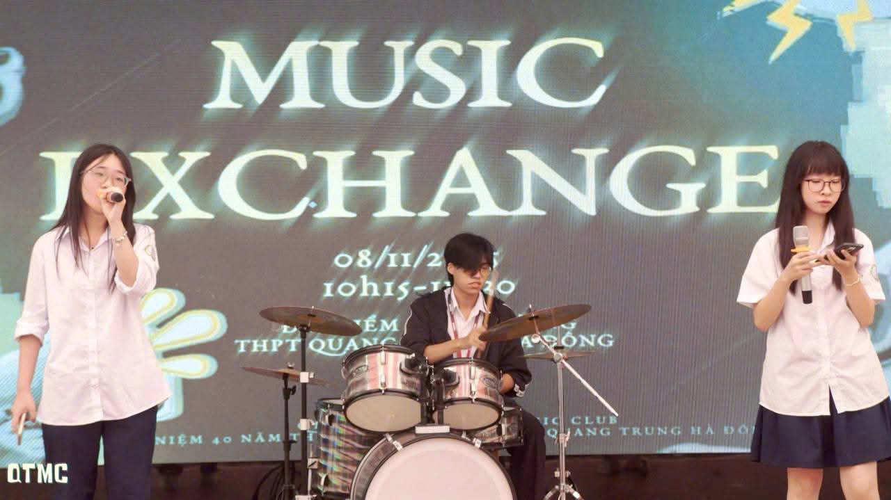
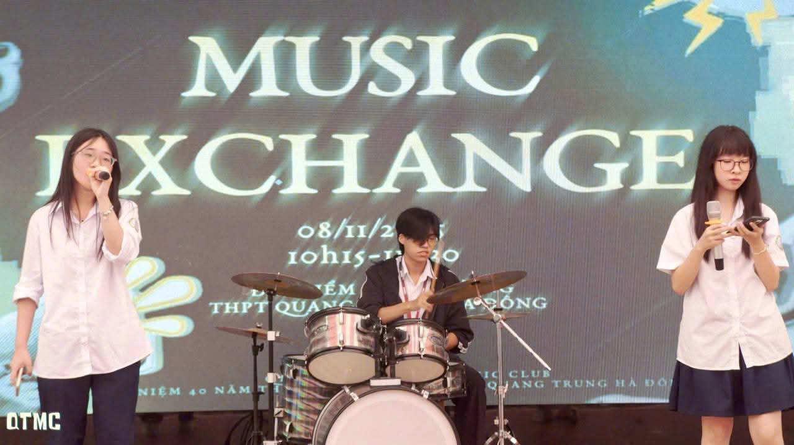

Quang Trung Music Club
Tại Quang Trung Music Club (QTMC), âm nhạc không chỉ là những nốt nhạc vang lên trên sân khấu, mà là ngọn lửa nhiệt huyết cháy bỏng trong tim mỗi thành viên. Trải qua hành trình phát triển ấn tượng đến thế hệ Gen 11.5, QTMC đã trở thành một "bản hòa âm" rực rỡ, nơi những tâm hồn nghệ thuật tìm thấy sự đồng điệu và tự do bứt phá giới hạn của bản thân. Dưới sự dẫn dắt của Chủ nhiệm Vương Hà Linh và Phó chủ nhiệm Nguyễn Mai Anh, câu lạc bộ luôn hoạt động với tinh thần chuyên nghiệp và đầy cảm hứng. Mỗi buổi tập luyện, mỗi dự án đều là minh chứng cho sức trẻ nồng nhiệt, nơi các bạn cùng nhau ghi lại những dấu ấn khó quên của thời cấp 3 đầy ý nghĩa.
 

QTMC tự hào là sân chơi đa dạng với những hoạt động chuyên sâu, giúp mỗi cá nhân đều có cơ hội tỏa sáng trong không gian âm nhạc đầy cảm hứng:
• Hoạt động các Ban chuyên môn: Từ Ban Chuyên môn (Vocal, Instruments, Produce) tập luyện kỹ thuật, đến Ban Meddes (Media, Design) và Ban Truyền thông chăm chút cho hình ảnh câu lạc bộ.
• Dự án EMBERWISH: Một hành trình âm nhạc ấm áp dịp cuối đông, nơi những giai điệu Giáng sinh quen thuộc được vang lên để lan tỏa hơi ấm đến mọi trái tim.
• Biểu diễn tại các sự kiện lớn: Tự hào góp mặt và khuấy động không khí tại các chương trình trọng đại của nhà trường như Lễ kỷ niệm 40 năm thành lập trường THPT Quang Trung - Hà Đông.
• Giao lưu và Workshop: Tổ chức các buổi sinh hoạt định kỳ để các thành viên cùng chia sẻ kinh nghiệm phối khí, biểu diễn và gắn kết tình cảm "gia đình" QTMC.
• Sáng tạo nội dung số: Phát triển các sản phẩm âm nhạc, hình ảnh trên Fanpage để kết nối và lan tỏa tinh thần yêu nghệ thuật đến toàn thể các bạn học sinh.
Một số bài hát do CLB thể hiện:
Dear Santa - Bảo Ngọc
Mùa nắng hạ - QTrung 40 năm
Đẹp nhất là em - Việt Anh và Hà Linh cover
Và còn nhiều bài khác....
Nếu tò mò và muốn khám phá thêm về CLB:
Facebook: Quang Trung Music Club - QTMC
Soundcloud: Quang Trung Music Club - QTMC
Instagram: Quang Trung Music Club - QTMC
Email: quangtrunghadongmusicclub@gmail.com
Thông tin liên hệ
Facebook A6
Facebook Trường
Page Trường
Trang web được tạo bởi
Nguyễn Đăng Hiệp - 12A6 (Thiết kế chính)Phạm Ánh Bình - 12A6 (Nội dung)
Nguyễn Văn Mạnh - 12A6 (Nội dung)
Vũ Anh Quân - 12A6 (Âm thanh - Video)
📩Email liên hệ Hiệp 😃 : hnguyendang696@gmail.com